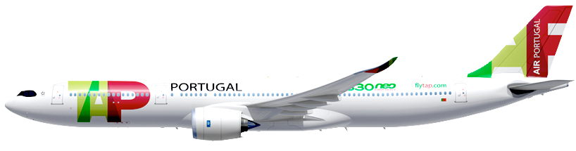

|
|
|
|
|
A Tap Air Portugal é a companhia aérea mais conhecida pelos portugueses, sendo membro da Star Alliance (aliança de companhias aéreas global, que foi a primeira a receber o prémio de Melhor Aliança da Skytrax, uma empresa de consultadoria do Reino Unido, cuja principal atividade é a análise do mercado da aviação, pelo que também é conhecida um pouco por todo o mundo). Dos 100%, a empresa pertence 72,5% ao Estado Português, cerca de 22,5% ao ex-militar português da força aérea, Humberto Pedrosa, e os restantes 5% pertencem ao grupo de trabalhadores da Tap Air Portugal. |

|
No ano 1945, com o fim da 2.ª Guerra Mundial, a aviação passa a ter um grande desenvolvimento. O seu mentor, o Sr. Humberto Delgado, vê que em Portugal falta a sua ligação com o resto do mundo, encontra aí uma oportunidade única para agir, criando assim uma nova e única companhia aérea.
Foi no dia 14 de março de 1945, que se dá início á empresa aérea que hoje tão bem conhecemos e ouvimos falar, TAP- inicialmente denominada por Secção de Transportes Aéreos, sob o poder do Secretariado da Aeronáutica Civil. Após a sua abertura, chegam os seus primeiros dois aviões, dois Dakota DC-3, aviões militares adaptados á aviação civil, que leva o seu logotipo para o mundo da aviação.
A sua primeira paragem é em Madrid, Espanha. A estreia da 1.ª linha comercial aconteceu a 19 de setembro de 1946, com um dos Dakota DC-3, com capacidade para apenas 21 passageiros, dando lugar a 11 passageiros para além da tripulação.
Para saber mais aceda a este link
A TAP, através do seu hub em Lisboa, uma plataforma privilegiada para a Europa, situa- -se no cruzamento da África, América do Norte, América Central e América do Sul, o que a ajuda a ser líder nas operações entre a Europa e o Brasil. A rede TAP cobre 93 destinos em 36 países, opera em média 2500 voos por semana, com uma frota de 100 aeronaves: 78 aeronaves Airbus e 22 aeronaves, ao serviço da TAP Express.
A frota de aviões da TAP é dividida em duas divisões. Os Airbus para longas e médias distâncias e os Embraer e ATR para voos curtos, pertencentes à TAP Express.
A empresa tem cinco fabricantes diferentes da Airbus, duas Embraer e uma ATR.
Frota Airbus NEOA330-900neoEste modelo conta com 298 lugares para passageiros. Atinge a velocidade máxima de 12,500km, e a sua velocidade de cruzeiro é de 930km/h. Este modelo consome menos 17% de combustível por cadeira que a sua geração anterior, reduzindo significativamente as emissões de CO2 e o seu ruído. A TAP conta com 19 unidades deste modelo. |
 |